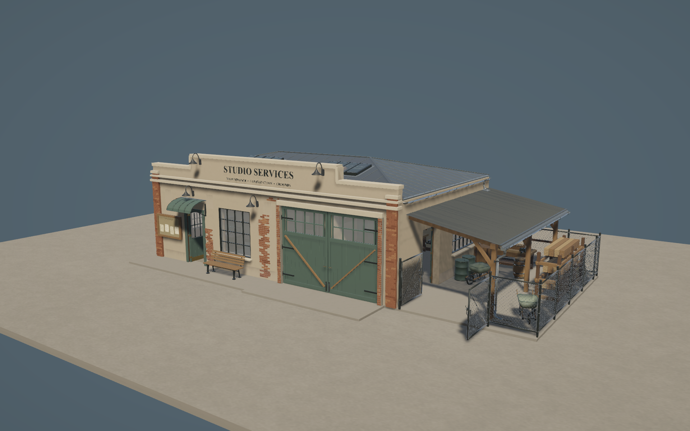

Approved concept — primary exterior reference · Full reference sheet

Unity production assembly — original massing camera
Open full-resolution capture
Technical validation does not constitute visual approval. Final LODs, dynamic doors, inventory/maintenance simulation and later-era replacements are outside this pass. Current complete assembly: 744,595 triangles before culling; repeated fixtures share meshes and materials.
Current canonical fidelity audit, close-ups and before/after review
Interiors, exterior and live integration
What is integrated
The existing New Studio entry point loads StudioServices_Live with the authoritative service-facility identity, five waiting positions, two interior hiring spots and construction reservation metadata. The generic cutaway hides roof/camera-facing renderers while preserving physical collision. Carry release, separate-click placement and Escape cancellation use the existing person interaction rules.
The populated developer scene remains available. Two explicit scenario references hide its art-only Administration instance and reflection probe only for New Studio. The live slab sits 20 mm above the lot to prevent coplanar flicker. A 25 mm navigation bake and 60 mm wall, workshop-prop and fence/gate bake guards provide reliable interior turns without changing physical walls or employee size.
Canonical kit catalog (61 assets)
Independent source collections, meshes, prefabs and catalog definitions. Canonical front +Z; Unity metres; 1930 availability with no forced expiry. Existing SilverScreen lamps and electrical cabinets are referenced unchanged.
Evidence and reproducibility
37-check preflight · Focused Unity tests · Actual Play Mode proof · Implementation / preservation manifest · Build instructions · Kit conventions
Source generators own the Blender files and exports. Unity builders update only their output folders. The approved massing source, Stage 1 and Administration art assets remain unchanged.